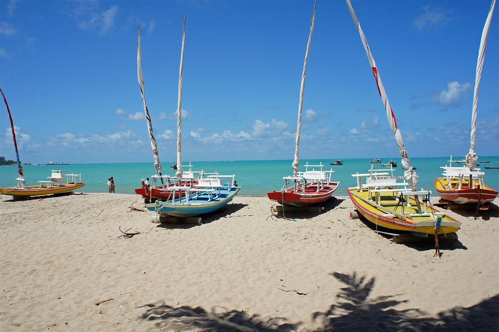
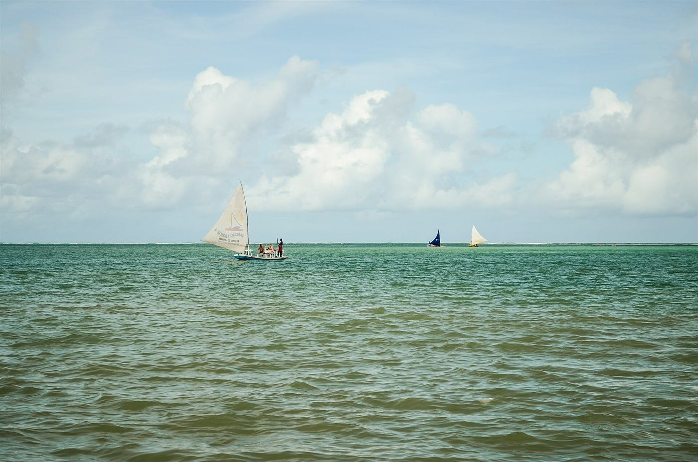
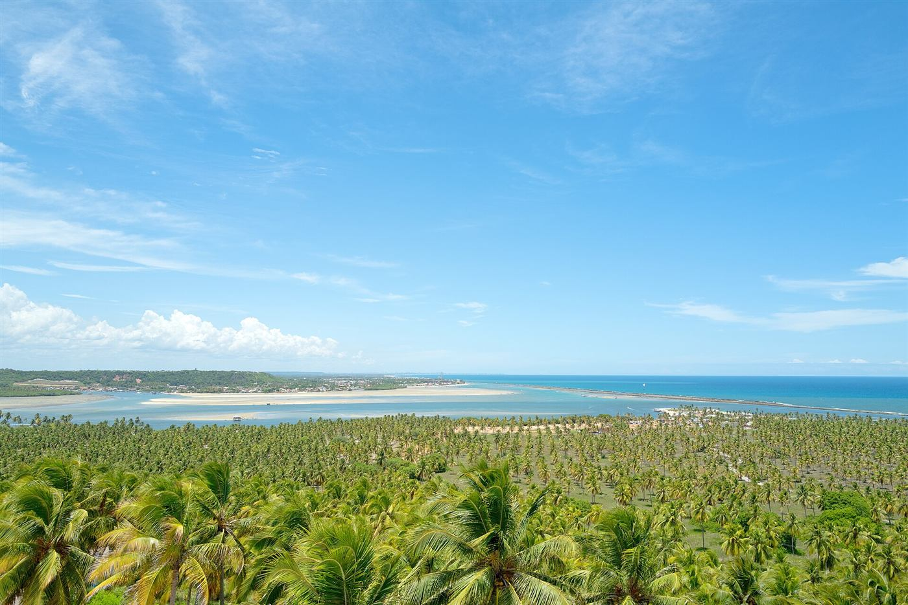
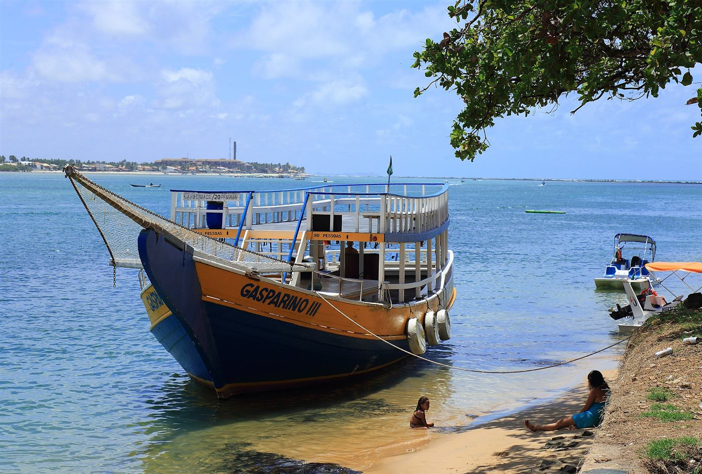

O que fazer perto da sua estadia.
Dicas práticas de quem administra imóveis em Maceió e no litoral de Alagoas.
Piscinas naturais da Pajuçara.
O passeio mais famoso de Maceió. Na maré baixa, os recifes a cerca de 2 km da areia formam piscinas de água clara no meio do mar. O segredo é a maré.

Quando ir
Com a maré abaixo de meio metro (0,5 m). Confira a tábua de marés do Porto de Maceió, no site da Marinha, e saia antes do horário da maré mais baixa. Com sol, a água fica mais clara.
Como ir
De jangada, saindo da própria orla da Pajuçara, com os jangadeiros credenciados. A travessia leva de 10 a 15 minutos, e o passeio todo, cerca de 2 horas.
O que levar
Protetor solar resistente à água, água para as 2 horas de passeio, calçado de neoprene (o fundo é de recife) e capa para o celular.
As jangadas saem da orla onde fica o New Time: dá para ir a pé do studio até o passeio.

Barra de São Miguel e o Gunga.
Praia de frente para a vila, passeios de barco até o Gunga, as falésias coloridas e a vista do mirante sobre o coqueiral. E o fim de tarde na beira da praia.
Praia do Gunga
Pertinho da Barra. Dá para chegar de barco, saindo da própria Barra de São Miguel.
Falésias e mirante
No caminho do Gunga, com a vista mais conhecida do litoral sul: o coqueiral encontrando o mar.
Fim de tarde na Barra
Depois do passeio, a praia em frente à vila é o lugar para ver o dia terminar.

O ILOA Residence fica na Barra de São Miguel, a cerca de 50 minutos do aeroporto de Maceió: apartamento de 3 quartos para até 6 hóspedes, num condomínio-resort cercado de verde.
Fotos (Wikimedia Commons, uso livre com crédito): Mariordo (Mario Roberto Durán Ortiz), CC BY-SA 4.0; Gustavocrocha, CC BY-SA 3.0; Marinelson Almeida, CC BY 2.0; Otávio Nogueira, CC BY 4.0.